Symbols, Keywords, Constants, Methods and Types
Changes and additions for Beta 6
If you have programmed in another language, the key differences to be aware of…
The Elan editor – quick reference
Navigation – using the keyboard
Mouse operation – quick reference
Printing plain text to the Console
Inputting data from the keyboard
Reading textual data from a file
Writing textual data to a file
Catching and throwing exceptions
Generating random numbers within a function
Dot methods that work on many different Types
| Punctuation symbols recognised by Elan | |||
| ( ) | brackets | used in arithmetic or logical expressions, and to delimit parameters | |
| [ ] | square brackets | used to delimit a literal Array or Dictionary, or for an index orindex-range |
|
| { } | curly braces | used to delimit a literal List or DictionaryImmutable, or to define an ‘interpolated field’ within a literal String |
|
| . | dot | used to define fractional number, and to access a method or property using ‘dot syntax’ | |
| .. | double-dot | used to define an index-range | |
| , | comma | used to separate items in several different forms of list | |
| : | colon | used to define a key-value pair in a literal Dictionary or DictionaryImmutable |
|
| + | plus | the addition operator | |
| - | minus | the subtraction operator, or negation (unary) operator | |
| * | multiply | the multiplication operator | |
| / | divide | the division operator. Also used to delimit a literal Regular Expression (RegExp) | |
| ^ | caret | raise-to-the-power-of operator | |
| < | less than | comparison operator | |
| > | greater than | comparison operator | |
| <= | less than or equal to | comparison operator | |
| >= | greater than or equal to | comparison operator | |
| => | fat arrow | used in a lambda to signify ‘returns’ |
|
| _ | underscore | only punctuation symbol that may be used within an identifier (name), and can also be used to ‘discard’ elements when deconstructing a Tuple |
|
| " | Double- quotes | the delimiter for a literal String |
|
| # | hash | signifies a comment | |
Colour key: keyword constant method parameter Type
Note: ‘extension’ means that the function or procedure is called using ‘dot syntax’ on a value of the appropriate Type.
abs(number) – standalone function
abstract – keyword: see Abstract class
acos(value) – standalone function
acosDeg(value) – standalone function
and – keyword: see Logical operators
any(lambdaOrFunctionRef) – extension function
append(value) – extension procedure
appendArray(other) – extension procedure
as – used in a parameter definition: see Functions and procedures
asArray() – extension function
asBinary() – extension function
asin(value) – standalone function
asinDeg(value) – standalone function
asIterable() – extension function
asList() – extension function
asRegExp() – extension function
assert – keyword: see Tests
asSet() – extension function
asString() – extension function
asUnicode(character) – extension function
atan(value) – standalone function
atanDeg(value) – standalone function
BaseVG – Type
be – keyword: see Let statement
bitAnd(a, b) – standalone function
bitNot(a) – standalone function
bitOr(a, b) – standalone function
bitShiftL(a) – standalone function
bitShiftR(a) – standalone function
bitXor(a, b) – standalone function
black – constant (Int)
BlockGraphics – Type
blue – constant (Int)
brown – constant (Int)
call – keyword: see Procedure
catch – keyword: see Catching and throwing exceptions
ceiling(number) – extension function
CircleVG – Type
class – keyword, see Class
clearConsole() – standalone procedure
clearGraphics() – extension procedure
clearKeyBuffer() – extension procedure
clock() – standalone system method
closeBrace – constant (String)
constant – keyword, see Constant
constructor – keyword, see Class
contains(item) – extension function
copy – keyword, see Working with records
cos(radians) – standalone function
cosDeg(degrees) – standalone function
createArray(size, initialValue) – standalone function
createArray2D(columns, rows, initialValue) – standalone function
createFileForWriting(fileName) – standalone function
degToRad(degrees) – standalone function
div – keyword, see Arithmetic operators
each – keyword, see Each loop
ElanSet – Type
else – keyword, see If statement and If expression
empty – keyword, creates the empty value of a specified Type. See e.g. Arrays and Lists
end – keyword, (followed by another keyword) defines the end of a multi-line construct
enum – keyword, see Enum
exception – keyword, see Try statement and
exp(x) – standalone function
false – constant (Boolean)
filter(lambdaOrFunctionRef) – extension function
floor(number) – extension function
for – keyword, see For loop
from – keyword, see For loop
function – keyword, see Function and Passing a function as a referenc
getKey() – standalone system method
getKeyWithModifier() – standalone system method
global – keyword, see Scoping and name qualification
GraphicsBase – Type
green – constant (Int)
grey – constant (Int)
hasKey(key) – extension function
head() – extension function
if – keyword, see If statement and If expression
ignore – keyword, see Tests
import – (Not yet implemented)
in – keyword, see Each loop
indexOf(targetString) – extension function
indexOfItem(targetItem) – extension function
inherits – keyword, see Inheritance
inputFloat(prompt) – standalone system method
inputFloatBetween(prompt, minValue, maxValue) – standalone system method
inputInt(prompt) – standalone system method
inputIntBetween(prompt, minValue, maxValue) – standalone system method
inputString(prompt) – standalone system method
inputStringFromOptions(prompt, options) – standalone system method
inputStringWithLimits(prompt, minLength, maxLength) – standalone system method
insertAt(index, value) – extension procedure
interface – keyword, see Interface
is – keyword, see Equality testing
isAfter(other) – extension function
isAfterOrSameAs(other) – extension function
isBefore(other) – extension function
isBeforeOrSameAs(other) – extension function
isnt – keyword, see Equality testing
joinArrayElements(separator) – extension function
joinListElements(separator) – extension function
keys() – extension function
lambda – keyword, see Lambda
length() – extension function
let – keyword, see Let statement
– keyword, see Scoping and name qualification
LineVG – Type
log10(number) – standalone function
log2(number) – standalone function
logE(number) – standalone function
lowerCase() – extension function
main – keyword, see Main routine
map(lambdaOrFunctionRef) – extension function
max() – extension function
maxBy(lambdaOrFunctionRef) – extension function
min() – extension function
minBy(lambdaOrFunctionRef) – extension function
mod – keyword, see Arithmetic operators
new – keyword, see Using a class
not – keyword, see Logical operators
of – keyword, used to define Types of elements, see Arrays and Lists Dictionaries Func
openFileForReading() – standalone system method
openBrace – constant (String)
or – keyword, see Logical operators
out – keyword, see Parameter passing
parseAsFloat(string) – standalone function
parseAsInt(string) – standalone function
pause(milliseconds) – standalone procedure
pi – constant (Float)
prepend(other) – extension procedure
prependArray(other) – extension procedure
print – keyword, see Input/Output
printLine(text) – standalone procedure
printNoLine(text) – standalone procedure
printTab(position, text) – standalone procedure
private – keyword, see Object-oriented programming
procedure – keyword, see Functions and procedures
property – keyword, see Property
putAt(index, value) – extension procedure
putAt2D(column, row) – extension procedure
putAtKey(key, value) – extension procedure
Queue – Type
quotes – constant (String)
radToDeg(radians) – standalone function
Random – Type
random() – standalone system method
randomInt(low, high) – standalone system method
range(start, end) – standalone function
record – keyword, see Working with records
RectangleVG – Type
red – constant (Int)
reduce(initialValue, lambdaOrFunctionRef) – extension function
ref – keyword, see Passing a function as a referenceRepeat loop
removeAll(value) – extension procedure
removeAt(index) – extension procedure
removeAtKey(key) – extension procedure
removeFirst(value) – extension procedure
repeat – keyword, see Repeat loop
replace(match, replacement) – extension function
return – keyword, last statement within a function – see Function
returns – keyword, defines the return Type in a function signature – see Function
round(number, decimalPlaces) – extension function
set – keyword, see Variables
Set – Type
sin(radians) – standalone function
sinDeg(degrees) – standalone function
sortBy(lambdaOrFunctionRef) – extension function
split(separator) – extension function
sqrt(number) – standalone function
Stack – Type
step – keyword, see For loop
tan(radians) – standalone function
tanDeg(degrees) – standalone function
test – keyword, see Tests
testRegExp(regExp) – extension function
TextFileReader – Type
TextFileWriter – Type
then – keyword, see If statement and If expression
this – keyword, see Object-oriented programming
throw – keyword, see Catching and throwing exceptions
to – keyword, see For loop
trim() – extension function
true – constant (Boolean)
try – keyword, see Catching and throwing exceptions
tuple –keyword, see Tuple
Turtle – Type
unicode(value) – standalone function
upperCase() – extension function
values() – extension function
variable – keyword, see Variables
VectorGraphics – Type
waitForAnyKey() – standalone procedure
while – keyword, see While loop
white – constant (Int)
with – keyword, see Working with records
withInsertAt(index, value) – extension function
withPutAt(index, value) – extension function
withPutAtKey(key, value) – extension function
withRemoveAll(value) – extension function
withRemoveAt(index) – extension function
withRemoveAtKey(key) – extension function
withRemoveFirst(value) – extension function
yellow – constant (Int)
You can access the Elan Beta here.
Elan is designed to run within the Chrome browser; correct operation within other browsers is not guaranteed.
The Beta version includes a Demo button that offers a menu of demonstration programs which you can run:
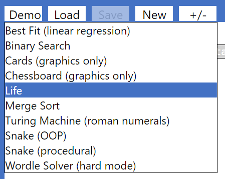
The best way to get started with Elan is to explore these demo programs. You can edit any of them and save your own copy locally.
Both the syntax and the layout for the following constructs have changed:
if statement. See If statementtry Statement. See Catching and throwing exceptionsThe switch statement has been removed entirely. The improved if statement means that the switch statement no longer offered any advantages over using a series of else if clauses.
There have been significant changes to object-oriented programming, including:
class, defining a constructor is now optional.class may now inherit from only one abstract class.abstract class may now define both public and private concrete properties and methods (as well as abstract properties and methods).interface – like an abstract class but defining only abstract members, and with the advantage that a concrete class may inherit from any number of interfaces (plus, optionally, one abstract class).abstract class cannot now inherit from another abstract class, but it may inherit from one or more interfaces.The following lists a few of the stand-out items that are not yet implemented. For a much longer list you are welcome to browse all the open items on our development project planning system on Github at: https://github.com/elan-languageAndIDE/issues. However, please bear in mind that those items are written by and for the development team, rather than for public discussion.
Int, Float, Boolean, and String. There are ready-made data structures as Types Array, List, Dictionary. Elan supports user-defined classes and enums, and there are several ready-made classes in the standard library such as BlockGraphics, File, Set, Stack, Queue, Tree, Graph … (only the first of these is in the Beta 6). variable statement, and re-assigned with a set statement.main, or within a function or procedure and are visible only within that scope.constant is only ever defined at global level and is set to a literal value of an immutable Type: for example any of the four basic Types or a List, but not an Array (see below).let statement may be thought of as being between a constant and a variable. Like a variable a let may be defined only within a routine, but unlike a variable it may not be re-assigned once defined. It is recommended that you always use a let in preference to a variable unless you need to be able to assign a new value to it.Array is a mutable data structure – as it is in most languages.Int or Float), but it may also be extended dynamically with the append and prepend methods.a[2][3]. See also 2-dimensional Array.is (for example if x is y) and isnt. The comparisons, >, <. >=, <= apply to numeric Types (Int and Float) only. (There are methods for String comparison – see Dot methods on a String )return statement which must be the last (or only) statement in the function body.print statementscall to any procedure (since procedures are not pure)procedure may be thought of as a ‘command’. Like a function it may define parameters but it does not return a value. This is because a procedure necessarily makes changes: changes to one or more of the parameters (if the parameter definition is prefixed by out), and/or changes to the system by calling print or any of the system methods.procedure exits after executing the last statement in the body. There is (deliberately) no mechanism to exit ‘early’, thereby enforcing structured programming.procedure is always executed via a call statement, either standalone, or as a ‘dot method’ on a named instance.procedures, returning no value, and are hence executed via the call statement. Others are similar to functions in that they return a value and are evaluated within an expression. However, unlike functions these system methods either have side-effects or external dependencies (or both). For that reason, no system method – whether resembling a procedure or a function – may be used within a user-defined function (or within a test). They may only be used within main or within a procedure.class must follow the rules for any Type name i.e. it must start with an upper-case letter.constructor, which is automatically added when you define a class. But it is not essential to define any code within that constructor. constructor, or within a procedure method defined on the class or the sub-class. But a property may never be assigned by code outside the class. If you require this capability, you can write your own procedure methods (commonly called ‘setter’ methods) to do this. A function method may read properties, but not write to them.
Whenever you wish to access a property from within a method (or from within the constructor) on the same class, then the name of the property must be prefixed with the ‘qualifier’ property. (‘property-dot’). This applies whether you are reading or setting the property. By this means you can have a method parameter with the same name as a property, but they are unambiguous because the property must be prefixed. A common pattern is to use the same name in a ‘setter’ method, for example:
procedure setName(name as String)
set property.name to name
end procedure
property. qualifier is neither required, nor allowed, when accessing a property on an instance of the class, because the instance name acts as the qualifier.class may inherit from one or more abstract classes, but may not inherit from another concrete class. This enforces the widely-recognised OOP design principle that ‘all classes should be abstract or final (not inheritable)’.abstract class may define abstract members (property, function, procedure), which must always be implemented by any concrete sub-class. It may also define private members (property, function, procedure), which are visible to any concrete sub-class, but not visible from code outside the class hierarchy. function. In addition:map, filter and reduce that apply to any Type that is ‘iterable’ (including String, Array and List).variable or let statement, by preceding the name of the function with the keyword function.lambda, inline as an argument in a function call, or assigned to a named value.String (immutable in most languages) and List (in contrast to many languages), and record which is like an immutable form of a class without encapsulated methods.
The Elan editor
– quick reference
Note: For Apple Mac users: commands use of the Ctrl key in this reference, should be replaced by the macOS Cmd key.
| Keystroke | On a selected Frame | On a selected Field |
| Home | First peer-level frame. | Move text cursor to start of field. |
| End | Last peer-level frame. | Move text cursor to end of field. |
| Tab | First field in frame. | Select next field within frame or, if from last field in a frame, select the frame itself. (If the field has a selected option in the auto-complete popup list then Tab will use that option – the same as Enter) |
| _ | Select previous frame (within peer-level only). |
Select previous frame (in tab order). |
| _ | Select next frame (within peer-level only). |
Select next frame (in tab order). |
| _ | Select parent frame (if any). | Move text cursor left within field. |
| _ | Select first child frame (if any). | Move text cursor right within field. |
| Shift-_ | Add prev. frame (peer-level) to current selection. | If auto-complete options are offered (drop-down list), move the selection down one in the list. (See also Enter) |
| Shift-_ | Add next frame (peer-level) to current selection. | If auto-complete options are offered (drop-down list), move the selection up one in the list. (See also Enter) |
| Esc | Escape from the code editor, and put focus on the first Button in the IDE | |
| Ctrl-o | Toggle (expand/collapse) outlining on selected frame. | Toggle (expand/collapse) outlining on the frame enclosing this field. |
| Ctrl-O (Ctrl-Shift-o) |
Toggle (expand/collapse) outlining on all frames. | Toggle (expand/collapse) outlining on all frames. |
| Keystroke | On a selected Frame | On a selected Field |
| Alt-t | Remove all ‘new code’ selections that can be removed. This is equivalent to clicking on the Trim button. (This cannot be Ctrl-t as that is defined and executed by the browser). |
|
| Backspace | On any ‘new code’ selector: delete the selector. (Note that all ‘new code’ selectors can be removed with the +/- button above the code pane). On a new, unmodified, frame, or from any unedited field within that new frame: delete the whole frame and go back to the selector. This capability is to facilitate deleting a frame created unintentionally. As soon as any field has been edited, or any child frame added – the frame can only be deleted using Ctrl-Delete (see below). |
Delete character to the left of the cursor. |
| Delete | Delete the character to the right of the cursor. | |
| Ctrl-Delete or Ctrl-d |
Delete the selected frame, including any frames within it. | |
| Enter | Insert a selector-frame (‘new code’) below selected, at peer level – if permissible. | If auto-complete options are offered (as a drop-down list), enter the selected option into the field. Otherwise, move to the next field (in the same frame) – like Tab. For last field in frame only: insert ‘new code’ after this field. |
| Shift-Enter | Insert a selector-frame (‘new code’) above selected, at peer level – if permissible | - |
| Ctrl- _ | Move selected frame(s) up, within peer level. | - |
| Ctrl- _ | Move selected frame(s) down, within peer level. | - |
| Ctrl- _ | Move the cursor to the end of the next ‘word’ or other transition | |
| Ctrl- _ | Move the cursor to the end of the next ‘word’ or other transition | |
| Ctrl-x | Cut selected frame(s) into the scratchpad | Cut any selected text from the field |
| Ctrl-v | - | Paste text from the clipboard into the field, at the cursor. On a selected ‘new code’ field: Paste the frame(s) added to the scratchpad in place of the ‘new code’ field. If any of the frames to be added is not compatible with the content of the ‘new code’ field then no action will take place. |
| Ctrl-z | Undo last edit Takes you back to the next most recent version that parsed successfully. Any changes made that did not result in a successful parse will be lost. |
|
| Ctrl-y | Redo last undo provided that the code you undid from was parsing successfully |
|
| Ctrl-p | Toggle the private status of members property, function or procedure of a class |
|
| Ctrl-i | Toggle the ignore setting of a test |
|
NOT YET IMPLEMENTED
One of the most important constructs in programming is the ‘expression’. An expression is evaluated to return a value. An expression is made up of the following possible elements:
which this chapter describes.
A literal value is where a value is written ‘literally’ in the code, such as 3.142 – in contrast to a value that is referred to by a name.
The following data Types may be written as literal values (follow the links to view the form of each literal value):
Int, Float, Boolean, String, Array, List, Dictionary, DictionaryImmutable, TupleA named value is a value that is associated with a name rather than being defined literally in code. There are various kinds of named value:
Constant, let statement, variable statement, Parameter passing, enum statement
For all kinds of named values, the name must follow the rules for an ‘identifier’. It must start with a lower-case letter, followed by any combination of lower-case and upper-case letters, numeric digits, and the _ (underscore) symbol. It may not contain spaces or other symbols. Once a named value has been defined, it can be referred to by the name.
With the exception of a constant (below), which is global in scope, named values are always ‘local’: their scope is confined to the method in which they are defined.
Elan allows local named values to be defined with the same name as a constant, function, or procedure defined at global level or defined in the standard library. In such cases, when the name is used within the same method, then it will refer to the local definition. If you have done this, but then need to access the constant, function, or procedure with the same name, then you can simply prefix the use of the name with a ‘qualifier’ of either global. or library. as appropriate.
If a variable is of an indexable Type, then an index or index range may be applied to the variable within an expression. For example:
variable a set to "Hello World!"print a[4]print a[4..]print a[..5]print a[0..4]See also: Using an Array, Using a Dictionary
Important: unlike in many languages, indexes in Elan (whether, single, multiple, or a range) are only ever used for reading values. Writing a value to a specific index location is done through a method such as:
putAt on an Array
withPutAt on a List
putAtKey on a Dictionary
withPutAtKey on a DictionaryImmutable
An enum – short for ‘enumeration’ – is the simplest form of ‘user-defined Type’. It specifies a set of values, each of which is defined as a name, such that a variable of Type enum must always hold one of those values.
The name given to an enum (see below), which must begin with an upper-case letter, is used as the Type name when passing a value to or from a procedure or function.
For example, this enum defines the possible String values of Status:
enum Status incomplete, ready, running, stopped, invalidand this defines the possible String values of Suit:
enum Suit clubs, diamonds, hearts, spadesThe value is specified by the Type name for the specified enum, followed by a dot and the value name, for example:
variable x set to Status.readyenums are read-only: once they have been defined it is not possible to add, remove, or update their values.Arithmetic operators can be applied to Float or Int arguments, but the result is always a Float:
2^3 gives 8
2/3 gives 0.666..
2*3 gives 6
2 + 3 gives 5
2 - 3 gives -1<br>
11 mod 3 gives 2 (integer remainder)
11 div 3 gives 3 (integer division)
Arithmetic operators follow the conventional rules for precedence i.e. ‘BIDMAS’ (or ‘BODMAS’)
Note: When combining div or mod with any other operators within an expression, insert brackets to avoid ambiguity e.g.:
(5 + 6) mod 3The minus sign may also be used as a unary operator, and this takes precedence over binary operators so:
2*-3 _ -6
Note that the Elan editor automatically puts spaces around the + and – binary operators, but not around ^, / or *. This is just to visually reinforce the precedence.
Logical operators are applied to Boolean arguments and return a Boolean result.
and and or are binary operators
not is a unary operator.
The operator precedence is not _ and _ or.
Example that implements an ‘exclusive or’.
function xor(a as Boolean, b as Boolean) returns Boolean
return a and not b or b and not a
end Function
Equality testing uses the is and isnt keywords with two arguments. The arguments may be of any Type.
a is b returns true, if a and b are both of the same Type and their values are equal. The only exception is that if one argument is of Type Float and the other is of Type Int, then is will return true if their values are the same, i.e. are the same whole number.isnt returns the opposite of isNote that in Elan equality testing is always ‘equality by value’; there is no such thing as ‘equality by reference’.
Note
is the editor will automatically insert a space after it. To enter isnt you need to delete the space (using the Backspace key) and then type nt.The numeric comparison operators are:
> for greater than
< for less than
>= for greater than or equal to
<= for less than or equal to
Each is applied to two arguments of Type Float, but any variable or expression that evaluates to an Int may always be used where a Float is expected.
Notes
isBefore and isAfter to compare strings alphabetically. See Dot methods on a String.< or > the editor will automatically insert a space after it. To enter <= or >= you need to delete the space (using the Backspace key) and then type =.You can combine operators of different kinds, e.g. combining numeric comparison with logical operators in a single expression. However the rules of precedence between operators of different kinds are complex. It is strongly recommend that you always use brackets to disambiguate such expressions, for example:
(a > b) and (b < c)(a + b) > (c -d)An expression may simply be a function call, or it may include one or more function calls within it. Examples:
print sinDeg(30)variable x set to sinDeg(30)^2 + cosDeg(30)^2variable name set to inputString("Your name")print name.upperCase()Notes
upperCase is a ‘dot method’ that may be applied to any instance (variable or literal) of Type String. See Dot methods on a String.All forms of input/output involve dependencies on, or make changes to, the system. Therefore they may only be used within either the main or a procedure.
Explanatory YouTube video: Elan input/output 1 - Printing to the Console
The simplest way to print is with the print statement. For example
print "Hello"
let a be 3
let b be 4
print a * b
print "{a} times {b} equals {a*b}"
Note
If you wish to have more control over printing then, as an alternative to using a print statement, you may call any of these three standard library procedures:
printLine(arg as String)printNoLine(arg as String)printTab(tabPosition as Int, arg as String)for example:
for i from 1 to 10 step 1
call printNoLine("{i}")
end for
Notes
String , but you can convert other Types into a String by using the dot method .asString()printLine prints the item with a newline afterwards, in the same way that the ordinary print statement does. (The only purpose of having this procedure is so that you may choose to do all printing via these methods rather than mixing them in with print statements).printNoLine does not automatically add a newline at the end, so you may subsequently print something else on the same line (unless you choose to include a newline \n within the string).printTab helps in the layout of information printed to the console, in particular, when printing columns of data. printTab requires an additional argument specifying the tab position which is number of characters from the left of the display. For example:
call printTab(0, "No.")
call printTab(10, "Square")
call printTab(20, "Cube\n")
for x from 1 to 10 step 1
call printTab(0, x.asString()
call printTab(10, "{x^2}")
call printTab(20, "{x^3}\n")
end for
or, to right-align numeric output:
variable tab set to 10variable i set to 0for i from 1 to (tab – 1) step 1 variable j set to 10^i call printTab(tab - digits(j), "{j}\n")function digits(number as Int) returns Int return number.asString().length()end functionAs well as plain text, it is also possible to print Html to the console, which will be correctly formatted. For example:
print "<h1 style='color: blue;'>A heading</h1>"print "<p>some text</p>"Will produce:
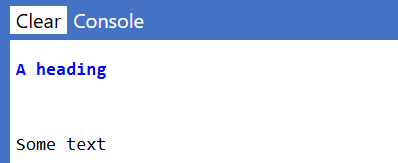
Notes
' as shown. Html will recognise single or double quotation marks, but entering double quotation marks would terminate the Elan string. Alternatively, you could replace each ' by the interpolated constant {quotes}.print statements – you can print a string of any length – but putting tags into separate print statements can improve the readability of your code. If you want styles to be applied to multiple tags you can embed a stylesheet. For example, the following stylesheet will set the font for all text, and some further details for all <h1> headings:
<style> h1 { color: blue; font-size: 24pt; } p { font-family: Helvetica; }</style>This may be safely coalesced into a single line and many spaces removed:
<style>h1{color:blue;font-size:24pt;}p{font-family:Helvetica;}</style>The only problem is with the curly braces {} since within a literal string Elan will interpret these as defining an ‘interpolation’ clause (see Interpolated string). This can best be overcome by using the interpolated constants {openBrace} and {closeBrace} instead of { and }:
main let stylesheet be "<style>h1{openBrace}color:blue;font-size:24pt;{closeBrace}p{openBrace}font-family:Helvetica;{closeBrace}</style>" print stylesheet print "<h1>A heading</h1>" print "<p>plain text</p>"end mainHere is the result:
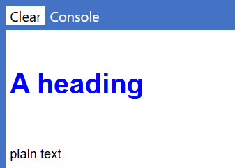
Alternatively you could put, say, [ and ] in the original Html stylesheet instead of { and }, and use a function to replace the square brackets with curly braces (defined by their Unicode codepoint values) before use, and get the same result:
main
let stylesheet be "<style> h1[color:blue;font-size:24pt;],p[font-family:Helvetica;] h1</style>"
print replaceBrackets(stylesheet)
print "<h1>A heading</h1>"
print "<p>plain text</p>"
end main
function replaceBrackets(original as String) returns String return original.replace("[", unicode(123)).replace("]", unicode(125))end functionNotes
call clearConsole(), then the stylesheet will be removed also. You can, though, print the stylesheet again before printing further content. In this case it can be a good idea to define the stylesheet as a (global) constant.* to define the applicability of a style, since this could mess up the styling of the Elan IDE, and even render it unusable. (Should this happen, refresh the browser and correct the stylesheet definition). If you want a style to apply to all elements that you are printing you may specify #console *, which means ‘all elements within the element with id = 'console'< and > in them in case they enclose non-blank characters since Elan will try and interpret the enclosed characters as an Html tag.Explanatory YouTube video: Elan input/output 2 - input from the keyboard
Also the readKey system method on BlockGraphics
Block graphics provides a simple way to create low resolution graphics, ideal for simple but engaging games for example. The graphics are displayed on a grid that is 40 blocks wide by 30 blocks high.
Each block may be rendered as a solid colour. Each block may alternatively hold a symbol: either one of the standard text characters or any Unicode symbol and, in each case, with specified foreground and background colours. For specifying colours, see Colour.
An example of block graphics to produce a rapidly changing pattern of coloured blocks:
main variable gr set to new BlockGraphics() while true let x be randomInt(0, 39) let y be randomInt(0, 29) let colour be randomInt(0, 2^24 - 1) set gr to gr.withBlock(x, y, colour) call gr.display() end whileend mainNotes
BlockGraphics (gr above) – for example by calling withBlock above – does not of itself result in anything appearing in the Graphics screen. The Graphics screen changes only when the display() procedure is called. This is so that you can make many changes to the graphics and then have them appear all at once (when display is called). It is even possible to create and modify, multiple instances of BlockGraphics, and switch instantly between them by calling display on different instances. withBlock method does not change the instance of BlockGraphics on which it is called, but returns a new instance of BlockGraphics based on the original with the change specified. This new instance may, however, be re-assigned to the same variable – as is the case in the code above.withBlock, there are these three function methods for updating the graphics:
withText(x as Int, y as Int, text as String, foreground as Int, background as Int) returns BlockGraphics
If the text argument is more than one character long, the characters will be placed in successive blocks, wrapping onto the next line if necessary. (If the string is too long to fit, from the starting coordinates specified, you will get a runtime error). Use only ASCII characters with values in the range 32 space) through 254 lower-case thorn).
withUnicode(x as Int, y as Int, unicode as Int, foreground as Int, background as Int) returns BlockGraphics
is used to specify a single symbol or character using its Unicode codepoint value.
withBackground(backgroundColour as Int) returns BlockGraphics
will paint the background colour for the whole grid, leaving any existing characters (and their foreground colours) unchanged.
There are also function methods on a BlockGraphics instance for reading the existing character and colours of a specified block:
getChar(x as Int, y as Int) returns String getForeground(x as Int, y as Int) returns IntgetBackground x as Int, y as Int) returns IntExample code:
main let t be new Turtle() call t.show() for i from 1 to 4 step 1 call t.turn(90) call t.move(100) call t.pause(500) end forend mainOutput:
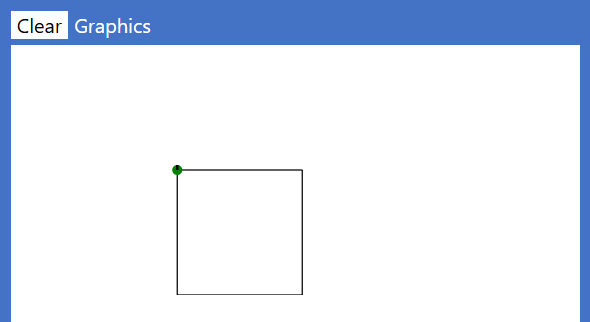Notes
move and turn are the two most commonly-used methods. To move backwards, specify a negative value. The value passed into turn is interpreted as degrees: a positive value turns clockwise; a negative value anti-clockwise. Both methods take a numeric value, which may be an Int or a Float.move procedure is specified in ‘turtle-units’. The Graphics pane on the screen (i.e. the ‘paper’ on which the Turtle draws) is 100 turtle units wide by 75 turtle units high. If the turtle is moved outside these boundaries it will not cause an error, but the location of the turtle and any lines outside the boundaries will not be visible.show causes the turtle to be displayed (the small green circle with a black radius showing the direction it is pointing); hide does the opposite. You can move and turn the turtle, causing lines to be drawn, whether or not the turtle is shown. penUp, then penDown when you are ready to draw lines again.penColour takes an integer argument specifying the colour. For specifying colours, see Colour.penWidth specifies the width of the line drawn by the turtle which must be an integer. The default is the minimum value of 1.x,y coordinates (0,0 being the top-left of the Graphics pane) with placeAt, which may also be used to reposition the turtle (without drawing a connecting line) during the program run. You may specify the turtle’s absolute heading with turnTo, where 0 would cause the turtle to face up the screen.x, y, and heading properties.call t.pause(500) and the standalone call pause(500): the former option is provided as a convenience, because most instructions in a Turtle program take the form call t.something. Both versions take an integer argument, being the length of the pause in milliseconds.penColour and pause methods, both of which require an integer value, all other procedure methods on the Turtle can take integer or floating-point values.Here is a more sophisticated example, using a procedure and recursion, that produces a fractal snowflake:
main variable t set to new Turtle() call t.placeAt(10, 60) call t.turn(90) call t.show() for i from 1 to 3 step 1 call drawSide(160, t) call t.turn(120) end forend mainprocedure drawSide(length as Float, out t as Turtle) if (length > 3) then let third be length/3 call drawSide(third, t) call t.turn(-60) call drawSide(third, t) call t.turn(120) call drawSide(third, t) call t.turn(-60) call drawSide(third, t) else call t.move(length) end ifend procedure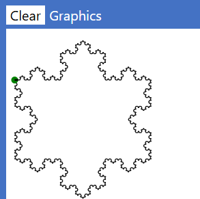
Example:
main variable vg set to new VectorGraphics() let circ be new CircleVG() with cx to 35, cy to 35, r to 5, stroke to red, strokeWidth to 2, fill to green set vg to vg.add(circ) call vg.display()end mainOutput:
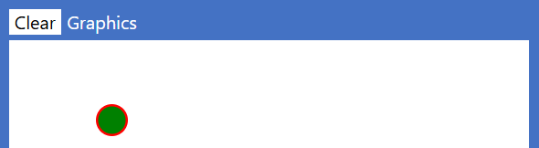
Notes
CircleVG for <circle../>, LineVG for <line../>, and RectangleVG for <rect../>. The properties of the Elan VG shapes match the names of the attributes used in the SVG tags, except that the stroke-width attribute is changed to strokeWidth to make it a valid Identifier..VG shapes have default values for all attributes, and so will show up even if no attributes have been specified. You can specify as many of the attributes as you wish when creating the shape using the new .. with syntax, as shown in the example above.VectorGraphics which must be assigned either to an existing variable, or to a new let.VectorGraphics instance, with later shapes positioned over earlier shapes.stroke and fill properties) may be specified as described at Colour. The fill colour only may also be specified as ‘transparent’ by giving it a negative value; we suggest using fill to -1VectorGraphics also has methods removeLast (no parameters), remove (which takes a shape as a parameter, and replace which takes an existing shape and a new shape as parameters. The new shape may be a modified version of an existing shape (created using copy .. with), thereby enabling animation. The following simple example creates a circle that changes between red and green every second:main variable vg set to new VectorGraphics() let greenCirc be new CircleVG() with cx to 50, cy to 37, r to 30, fill to green let redCirc be copy greenCirc with fill to red set vg to vg.add(greenCirc) while true call vg.display() call pause(1000) set vg to vg.replace(greenCirc, redCirc) call vg.display() call pause(1000) set vg to vg.replace(redCirc, greenCirc) end whileend main
Where a colour can be specified, it is a value of Type Int in the range
0 – 16,777,215 (i.e. 0 to 224 -1, expressable as 24-bit binary number).
As in Html, a colour number is made up of the values from 0 to 255 for each of the three components: red (R), green (G) and blue (B). So a colour value may be described by its integer value, or by three decimal values (R, G, B), or by a 6-digit hexadecimal number (0xrrggbb).
Elan has a small number of standard named colours:
| Integer decimal |
R G B decimal |
R G B hexadecimal |
Colour name |
| 0 | 0 0 0 | 0x000000 |
black |
| 16777215 | 255 255 255 | 0xffffff |
white |
| 16711680 | 255 0 0 | 0xff0000 |
red |
| 32768 | 0 128 0 | 0x008000 |
green |
| 255 | 0 0 255 | 0x0000ff |
blue |
| 16776960 | 255 255 0 | 0xffff00 |
yellow |
| 10824234 | 165 42 42 | 0xa52a2a |
brown |
| 8421504 | 128 128 128 | 0x808080 |
grey |
You can use these colour names directly in an Int. If you want to define other colours, you put any of the 16,777,215 colour numbers into literals, constants or variables either as a decimal integer or, more conveniently, in the hexadecimal form shown in the table. For example you might define lightBlue and deepPink using these hex values:
| 8421504 | 128 171 255 | 0x80abff |
lightBlue |
| 16206720 | 247 75 128 | 0xf74b80 |
deepPink |
and then use a variable or a constant to hold those values:
variable lightBlue set to 0x80abffconstant deepPink set to 0xf74b80Note that in Elan code a hexadecimal colour value is preceded by 0x, whereas in an Html stylesheet it is preceded by #. Also, the standard colour names may not correspond exactly.
In some applications – especially in games, for example – you want the program to react to a key pressed by the user, but without holding up the program to wait for value to be input.
Whether your application makes use graphics, or just uses the Console for text, reading keystrokes ‘on the fly’ is done via one of two methods:
let key be getKey()let key, modifier be getKeyWithModifier()Notes
getKey is called, the system does not wait for a response. If a key has been pressed then that will be returned as a String e.g. "a"."Backspace","Enter","ArrowDown",.."". getKey. To read those keys use…Shift, Ctrl, or Alt (or the empty string if no modifier key is pressed).getKey methods are System methods because they have a dependency on the system and so may only be used within a procedure or in main.Use the procedure method clearKeyBuffer() if you want to enforce that the user cannot get too far ahead of the program by hitting keys in very rapid succession.
waitForAnyKeypauses the execution of the program until the user presses any single key. The identity of the key is not captured though. Example of use:
print "Press any key to continue.."
call waitForAnyKey()
call clearConsole()
print "Next page"
Reading a whole file in one go:
let file be openFileForReading()let text be file.readWholeFile()call file.close()print textReading a file line by line:
let file be openFileForReading()variable lines set to empty Array<of String>while not file.endOfFile() let line be file.readLine() call lines.append(line)end whilecall file.close()Notes
openFileForReading will present the user with a dialog to select the file.readWholeFile returns a String containing every character in the file, without any trimming. It automatically closes the file after the read.readLine reads as far as the next newline character (\n) and then automatically trims the line to remove any spaces and/or carriage-returns (which some file systems insert after the newline automatically) from the resulting line returned as a String. If this behaviour is not desired, you can use readWholeFile, which does no trimming, and then parse the resulting String into separate lines.file.close() after reading line by line is strongly recommended to avoid any risk of leaving the file locked. It is not necessary to call it after using readWholeFile() because that method automatically closes the file.Writing a whole file in one go:
let f be createFileForWriting("myFile.txt")call f.writeWholeFile("this is\nmyText")Writing a file line by line:
let file be createFileForWriting("squares.txt")for i from 1 to 100 step 1 call file.writeLine("{i} {i*i}")end forcall file.saveAndClose()Notes
writeLine adds the string it is passed onto the end of any data previously written, with a newline character (\n) automatically appended.saveAndClose() you will be presented with a dialog to confirm (or edit) the given filename and location where it is to be saved. It is not therefore strictly necessary to specify a filename when creating the file, since it can be specified by the user in the dialog so, in that case, you might put the empty string "" into the parameter of createFileForWriting.writeWholeFile puts the string it is given into the file and then automatically saves the file, so the user will be presented with the same dialog as if saveAndClose had been called.saveAndClose or by writeWholeFile) will result in a runtime error.try..catch like this:try call file.saveAndClose()catch exception in e print "File save cancelled"end tryor you could make the code offer the user options: to save again, or to continue without saving.
Explanatory YouTube video: Elan language constructs 1 - main routine
A file must have a main method if it is intended to be run as program. (You may however develop and test code that does not have a main method, either as a coding exercise or for subsequent use within another program).
The main method defines the start point when a program is run.
The main method does not have to be at the top of the file, but this is a good convention to follow.
There may not be more than one main method in a file – and the global selector (above) will not show the main option when one already exists in the file.
Example:
main variable li set to [3, 6, 1, 0, 99, 4, 67] call inPlaceRippleSort(li) print liend mainThere are several kinds of name value in Elan, defined by:
constant (which might be a user-defined constant or a library constant)let statement (see below)variable statementfunction or a procedure: see Functions and proceduresA constant defines a named value that cannot change.
A constant is always defined at ‘global’ level (directly within a file) and is global in scope. A constant may not be defined within any method. (However, see [missing hyperlink]).
The name of a constant follows the rules for an Identifier.
The value to which a constant is set must be a Literal value, of one of the following Types: Int, Float, Boolean, String, Dictionary, or DictionaryImmutable.
Examples:
constant phi set to 1.618constant maxHits set to 10constant warningMsg set to "Limit reached"constant fruit set to {"apple", "orange", "banana"}constant black set to 0x000000constant red set to 0xff0000constant scrabbleValues set to {"A":1, "B":3, "C":3, "D":2, "E":1, "F":4, "G":2, "H":4, "I":1, "J":8, "K":5, "L":1, "M":3, "N":1, "O":1, "P":3, "Q":10, "R":1, "S":1, "T":1, "U":1, "V":4, "W":4, "X":8, "Y":4, "Z":10}constant colours set to {Suit.clubs:black, Suit.diamonds:red, Suit.hearts:red, Suit.spades:black}(In the last example above, Suit is an Enum).
The purpose of let statement is to calculate an intermediate result for use within one or more subsequent expressions. This may be for any of the following reasons:
Here are examples of let statements in use:
let wordCounts be allRemainingWordCounts(possAnswers)
let best be wordCounts.reduce(wordCounts.head(), lambda bestSoFar as WordCount,
newWord as WordCount => betterOf(bestSoFar, newWord, possAnswers
You are never required to use a let statement: you may always use a variable instead. But if you are willing to use let where you can, it is considered a good practice in functional programming. let may be thought of as somewhere between a Constant and a Variable statement but also has unique characteristics:
let statement defines a new named value.let may not be subsequently re-assigned. let is defined within main or any method.let may be defined by an expression i.e. may make use of other variables and constants.The variable statement is used to define, and initialise, a new variable. Unlike a named value defined by a let statement, a variable may be re-assigned from its initial value to a new value.
The name given to the variable must follow the rules for an Identifier.
The value to which the new variable is initialised may be a literal value, or a more complex expression. Either way, the resulting value defines the Type for that variable.
The set statement is used to assign a new value to an existing variable. The new value must be of the same Type (or a Type compatible with) that of the variable.
A set statement may not assign a new value to a parameter: see Parameter passing.
Example1:
if head is apple then
call setAppleToRandomPosition(apple, body)
else
call body.removeAt(0)
end if
Example 2:
if item is value then
set result to true
>else if item.isBefore(value) then
set result to binarySearch(list[..mid], item)
else
set result to binarySearch(list[mid + 1..], item)
end if
Notes
else clause is optionalelse if clauses as you wish, but only one unconditional else (which, if present, must be the last clause).Elan also supports the If expression, which, although often thought of as a Functional programming technique, may be used within procedural programming also – within any expression.
Explanatory YouTube video: Elan language constructs 6 - 'for' loop
Notes
from, to, and step) must all be integers – positive or negative.
However, if you require a negative step then the literal value, variable, or expression must start with a negative sign – as this is needed at compile time to determine the nature of the exit condition. So if you have a variable s that holds a negative value to be used as the step, then you will need to write something like the following:
variable s set to -3
for i from 100 to 0 step -(-s)
..
end for
Explanatory YouTube video: Elan language constructs 7 - 'each' loop
Explanatory YouTube video: Elan language constructs 8 - 'while' loop
Explanatory YouTube video: Elan code constructs 9 - 'repeat' loop
The main routine may delegate work to one or more functions or procedures.
Like a function, a procedure is a named piece of behaviour that may define parameters; unlike a function, a procedure does not return a value. Also unlike a function, a procedure can have ‘side-effects’ - indeed it must have side-effects otherwise there would be no point in calling it! For this reason the statements within a procedure can:
print statements (or methods). input methods or other ‘system’ methods (such as a random number generation).call other procedures (or itself if ‘recursion’ is required).out Example:procedure inPlaceRippleSort(out list as Array<of Int>) variable lastComp set to list.length() - 2 repeat set changes to false for i from 0 to lastComp step 1 if list[i] > list[i + 1] then variable temp set to list[i] set list[i] to list[i + 1] set list[i + 1] to temp set changes to true end if end for set lastComp to lastComp - 1 end repeat when not changesend procedureProcedures are executed within a call statement, for example:
main variable li set to [3, 6, 1, 0, 99, 4, 67] call inPlaceRippleSort(li) print liend mainNotes
as <Type>, for example age as Int.The arguments provided to a method (function or procedure) are passed ‘by value’ and not ‘by reference’. If you wish to be able to re-assign the value associated with a parameter, such that that change would be visible to the code that calls the procedure, then you can precede the parameter definition with the keyword out. This is useful when you are passing in, say, an Int that refers to an index, and you want the procedure to update the index number it is pointing to.
Note, however, that mutating an instance of a reference Type held in a variable is not the same thing as re-assigning the variable to a different instance. The first changes the contents of the thing, the second changes the thing for another thing!
Therefore, if
procedure ANDArray, Dictionary, Stack, Queue, or a user-defined classthen it is possible to mutate the parameter that holds that argument within the procedure, such that any reference to the argument outside the procedure will ‘see’ the changes.
A good example of this is an ‘in-place sort’ procedure. In the following code the arr parameter is mutated in the two highlighted lines:
procedure inPlaceRippleSort(arr as Array<of Int>) variable changes set to true variable lastComp set to arr.length() - 2 repeat set changes to false for i from 0 to lastComp step 1 if arr [i] > arr [i + 1] then variable temp set to arr [i] set arr[i] to arr[i + 1] set arr[i + 1] to temp set changes to true end if end for set lastComp to lastComp - 1 end repeat when not changesend procedureNote however that:
function you may not mutate any parameterprocedure you may not re-assign any parameterYou can deliberately generate, or ‘throw’, an exception when a specific circumstance is identified with a throw statement, for example:
throw exception "something has happened"Where another piece of code might throw an exception, for example when calling a System method that is dependent upon external conditions, it may be executed within a try statement, for example:
try call foo() print "not caught" catch exception in e print e end tryThe variable holding the exception (by default named e, but this may be changed by you) is of Type String. You may compare the exception message to one or more expected messages and, if the message does not match an expected exception, you may choose to throw the exception ‘up’, as in this example:
try call foo() print "not caught" catch exception in e if e isnt "An expected message" then throw exception e end if end tryRandom numbers may be created by calling one of these two standard methods:
random() returnss a Float in the range 0 … 1randomInt(min, max) returnss an Int in the range min to max inclusiveFor example:
let probability be random()
print probability
for i from 1 to 10 step 1
print randomInt(1, 6)
end for
Notes
main or a procedure. A resulting Int or Float may then be used as an argument to pass into a function.function: See Generating random numbers within a function.Explanatory YouTube video: Elan language constructs 4 - comments
Comments:
# followed by a space and then free-form text. The text field may be left emptyA class is a user-defined Type offering far richer capability than an enum.
(A record is in some ways similar to a class but simpler: it defines properties, but has no constructor and no methods. See Working with records).
Here is an example of class definition, taken from the Snake OOP demo program:
class Apple constructor(board as Board) set property.board to board end constructor property board as Board property location as Square procedure newRandomPosition(snake as Snake) repeat variable ranX set to randomInt(0, board.width - 1) variable ranY set to randomInt(0, board.height - 1) set location to new Square(ranX, ranY) end repeat when not snake.bodyCovers(location) end procedure function updateGraphics(gr as BlockGraphics) returns BlockGraphics return gr.withBlock(location.x, location.y, red) end functionend classNotes
A class must have:
A class may define:
function methods – see Function methodprocedure methods – see Procedure methodconstructor which may be used for setting up the values of properties. The constructor may optionally define parameters to force the calling code to provide initial values. However, it is not necessary to add a constructor if you have no need to initialise properties. Code in the constructor may make use of any functions, and follows the same constraints as a function (i.e. may not call any procedure, whether defined on the class or outside).A class is instantiated using the keyword new followed by the class name and brackets, which should enclose the comma-separated arguments required to match the parameters (if any) defined on the constructor for that class. For example (also from the Snake OOP demo):
variable board set to new Board(40, 30) variable currentDirection set to Direction.up variable snake set to new Snake(board, currentDirection) variable apple set to new Apple(board)The created instance may then be used within expressions, like any other variable.
An abstract class may not be instantiated (and hence may not define a constructor). It may define concrete members i.e.:
property functionprocedureAs with a concrete class, any of these members may be made private after the corresponding frame has been added, by selecting that member frame and pressing Ctrl_p.
These concrete members are automatically inherited by any sub-class, but they may not be overridden (re-defined) by the sub-class. Therefore you should define concrete members only if they are intended to work identically on every sub-class.
You may also define abstract methods on an abstract classes i.e. abstract property, abstract function, abstract procedure. Such methods define only the signature of the method, not the implementation (body). Therefore they have no end statement. For example:
abstract function calculateDiscount() as Float
If you wish to have several sub-classes of an abstract class that share a common implementation for a method, but require that some of the sub-classes can define a different implementation, then you should:
abstract on the superclassdefault An interface is similar to an abstract class, with the difference that it may define only abstract members. The advantage of using an interface instead of an abstract class is that a concrete class can inherit from multiple interfaces. See Inheritance.
An interface may inherit only from other interfaces.
Important: An interface must not re-declare abstract interfaces that are defined in any interface it inherits from, directly or indirectly.
A regular (concrete) class may optionally inherit from just one abstract class (see Abstract class), but may additionally inherit from any number of interfaces (see Interface). The concrete class must define for itself a concrete implementation of every abstract member defined in the abstract class or any interfaces that it inherits from, directly or indirectly.
Notes
abstract class must be declared above any class that inherits from it. This is the only case where the order of definition (of global constructs) matters.abstract class (if any) and the interfaces (if any) that a concrete class inherits from may not contain duplicates of any abstract member. Any duplicated definitions in the hierarchy will result in a compile error. If such duplications arise, you should factor out the common member definitions, and move them up the hierarchy or into new interfaces inherited by the interfaces and/or classes that need them.A inherits from Type B, which inherits from Type C, which inherits from Type A.abstract class and/or interfaces) that a concrete class inherits from may not define conflicting members, e.g. members with the same name but having different Type signatures.Examples:
property height as Intproperty board as Boardproperty head as Squareproperty body as [Square]property is defined on a Class and must specify a name (conforming to the rules for an Identifier and a Type.property may be marked private, in which case it is visible only to code within the class and, if defined on an abstract class, within its sub-classes. This is done by selecting the property frame and pressing Ctrl-p. (Pressing these keys again will remove the private modifier).private, a property may be read but not be written to. Properties may only be modified from outside the class by means of a Procedure method.constructor.
If the property is not initialised within the constructor then it will automatically be given the empty value for that Type. You may test whether a property contains this default value by writing e.g.:
if head is empty Square
property. (‘property-dot’). This applies whether you are reading or setting the property. By this means you can have a method parameter with the same name as a property, but they are unambiguous, because the property must be prefixed. A common pattern is to use the same name in a ‘setter’ method, for example:constructor(board as Board) set property.board to boardend constructorprocedure setHeight(height as Int) set property.height to heightend procedureA function method follows the same syntax and rules as a free-standing (global) function. The differences are:
function method is always referenced (used) by code outside the class using ‘dot syntax’ on an instance.function method may directly reference (read only) any property defined on the class as though it were a variable/parameter.function method may be marked private, in which case it is visible only to code within the class and, if defined on an abstract class, within its sub-classes. This is done by selecting the property frame and then pressing Ctrl-p. (Pressing these keys again will remove the private modifier).asString function method will automatically be used. Typically asString will return a string made up of one or more of the property values, perhaps with additional text, or the results of function calls.A ‘procedure method’ follows the same syntax and rules as a free-standing (global) procedure. The differences are:
property defined on the class.private, in which case it is visible only to code within the class and, if defined on an abstract class, within its sub-classes. This is done by selecting the property frame and then pressing Ctrl-p. (Pressing these keys again will remove the private modifier).Functional programming
Elan is designed to support the ‘functional programming’ paradigm.
Unlike in most ‘mixed-paradigm’ programming languages, all functions in Elan are ‘pure functions’. Elan does not permit any function to create ‘side-effects’, and enforces that the returned value is derived solely, and deterministically, from the values passed into the function’s parameters. This applies whether or not you are actively seeking to write code according to the functional programming approach.
When writing code according to the functional programming paradigm the aims are:
Elan’s built-in support for character-mapped BlockGraphics is a good example of this pattern: almost all the work can be done using the built-in functions, such as withBlock, which may be used within your own user-defined functions. Only the draw method (the only one that actually changes the display) is a procedure, and this must be called from within main or a procedure.
Although it is not a requirement to do so, adopting the functional programming paradigm also means that, wherever possible, functions should avoid using procedural code constructs: sequence, loop, and branch. Here are some examples of functions that don’t use any of those procedural code constructs:
function w(c as Int) returns Int return if (c mod 40) > 0 then c - 1 else c + 39end functionfunction possibleAnswersAfterAttempt(prior as List<of String>, attempt as String, mark as String) returns List<of String> return prior.filter(lambda w as String => markAttempt(attempt, w) is mark).asList()end functionfunction nextGeneration(cells as [Boolean]) returns [Boolean] let cellRange be range(0, cells.length() - 1) let next be cellRange.map(lambda n as Int => nextCellValue(cells, n)) return next.asArray()end functionIn the examples above we can see several patterns or techniques that are widely used in functional programming in place of procedural code constructs:
filter – together with Passing a function as a reference.If you are passing a reference to a free-standing function as an argument into a HoF (as distinct from defining a lambda) then you provide the name of that function, but precede it with the keyword function. For example:
variable passes set to allPupils.filter(function passedMathsTest)function passedMathsTest(p as Pupil) as Boolean return p.mathsPercent > 35end functionNotes
passMathsTest, the name is preceded by function, and no parameters (or brackets) are added to the name as they would have been if you were evaluating (calling) the function at that point.lambda, instead of writing a loop.let statement (instead of a variable statement) to calculate intermediate values.These are explained below.
The ‘if expression’ is in certain respects similar to an If statement, but with the following differences:
if expression always returns a value.then and a single else clause, and each clause contains just a single expression. The if expression returns the result of evaluating one of these two expressions, according to whether the condition evaluates to true or false.Here are three examples:
return if c < 1160 then c + 40 else c – 1160return if isGreen(attempt, target, n) then setChar(attempt, n, "*") else attemptreturn if attempt[n] is "*" then attempt else if isYellow(attempt, target, n) then setChar(attempt, n, "+") else setChar(attempt, n, "_"))Notes
if expression is being entered or edited, it is presented as a single editable line which may be scrolled horizontally. As soon as the entry/edit field is exited, the expression will be re-formatted as shown above, with each else clause starting on a new line, indented by one character. Note that each of the three examples above is still a single statement and not a sequence of statements.else keyword may be followed by a further if expression, as in the second example above. It is possible to form a long ‘chain’ of these else if clauses, in which case there is only ever one unconditional else clause at the very end.if expression within the then clause then this ‘nested’ if expression must be surrounded by brackets in order to avoid ambiguity. However, nesting if expressions in this way, rather than chaining else if statements (above), will make the if expressions hard to read and interpret.A ‘higher order function’ is one that takes in a reference to another function as a parameter, or (less commonly) that returns a reference to another function as its result.
The Elan standard library contains several HoFs that are widely recognised and used within functional programming. See discussion of iterables in Higher order functions (HoFs).
On most occasions when you write the name of an existing function elsewhere in code your intent is to evaluate the function and, to do so, you write the name of the function followed by brackets containing such arguments as are required by the function. For this reason if you forget to add the brackets, you will get an error, for example:
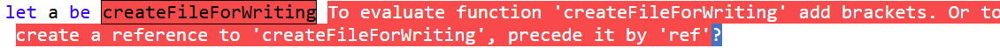
The second sentence in this error message is for when your intention is not to evaluate the function, but to create a reference to the function. This is a valid thing to do in functional programming but is not generally done in procedural programming. As the error message says, to create a reference to a function you need to precede it by and the name of the function should then not be followed by brackets (or any arguments). For example:
variable passes set to allPupils.filter(ref passedMathsTest)function passedMathsTest(p as Pupil) as Boolean return p.mathsPercent > 35end functionA lambda is lightweight means to define a function ‘in line’. You typically define a lambda:
The syntax for a lambda is as follows:
lambda. => symbol, which is usually articulated as ‘returns’, ‘yields’ or even ‘fat arrow’.Example:
function liveNeighbours(cells as [Boolean], c as Int) returns Int
let neighbours be neighbourCells(c)
let live be neighbours.filter(lambda i as Int => cells[i])
return live.length()
end function
Notes
The following example uses both these techniques within a function:
function safeSquareRoot(x as Float) returns Float
let root be lambda => sqrt(x)
return if x < 0 then 0 else root()
end function
TODO
The Iterable Type
The Func Type
You may pass an instance of a Class into a function, but you may not call any procedure on, or otherwise mutate, the instance.
If you are wanting to learn to write code according to the functional programming paradigm, it is better to try to work exclusively with immutable Types. Elan provides very good support for these, both in the form of standard immutable data structures (such as the List) and the user-defined ‘record’ Type. Here is an example:
record Square property x as Float property y as Float property size as Float property colour as Intend recordA record is a user-defined data structure that is given a Type name – Square, above – that must begin with an upper-case letter. The record defines one or more properties, each of which has a name (starting with a lower-case letter) and a Type. The Type of a property may be any simple value Type (as in the example above), or a List, another Type of record (or even the same Type of record). What distinguishes a record Type from a List is that its members may be of different Types, and what distinguished a record Type from a Tuple is that each member has a specific name.
Having defined a record Type, such as Square above, you can create as many instances as you wish using the following syntax to specify the values:
let sq1 be new Square() with
x set to 3.5,
y set to 4.0,
size set to 1.0,
colour set to blue
with clause’ (as above), that property will be given the empty (default) value of the correct Type.
You can then read the values from the properties using ‘dot syntax’ for example:
print sq1.sizerecord Types are immutable: the properties on an instance may not be changed, directly. However, you can easily create another instance that is a copy of the original, with all the same property values except for any specific changes made in another with clause. The newly-minted copy (with changes) must be assigned to a new named value. For example:
let sq1 be new Square() with
x set to 3.5,
y set to 4.0,
size set to 1.0
let sq2 be copy sq1 with
size set to 2.0,
colour set to red
variable a set to new Square() with x to 3.5, y to 4.0, size to 1.0,set a to copy a with size to 2.0, colour to redThis last example shows how you enter the comma-separated with clauses. The earlier examples show how the Editor displays a set of with clauses.
Note that a record Type has some similarity to a class:
However a record is different from a class in that:
record does not define a constructorrecord cannot define any methodsrecord is immutable (like a List or a String). You can create a copy with specified differences but you cannot modify a property on a given instance.record instance may be created or copied using a with clause, whereas with may not be used on a class instance.A record may be ‘deconstructed’, meaning that its properties are read into separate variables using the same syntax as for deconstructing a Tuple. For example, assuming that Square is a record defined as in the example above then this code:
let x, y, size, colour be mySquarewill read the properties into the four names defined.
Note
properties of the record. However, the ordering of the names does not have to match the order in which the properties are defined in the record.
It is not possible to use the system methods random() or randomInt() within a function because they create unseen side-effects. You may use those system methods outside the function and pass the resulting random number (as an Int or a Float) as an argument into a function.
It is possible to create and use random numbers within a function, but it requires a different approach and is a little more complex, using a special Type named Random (note that the R is in upper-case), as in this example:
main
variable rnd set to new Random()
call rnd.initialiseFromClock()
variable dice set to 0
for i from 1 to 10 step 1
set dice, rnd to rollDice(rnd)
print dice
end for
end main
function rollDice(rnd as Random) returns (Int, Random) return rnd.nextInt(1, 6)end functionThe Random Type defined two ‘function methods’: next and nextInt.
Both of them return a 2-Tuple consisting of the random value (as either a Float or an Int respectively) plus a new Random. The new (returned) Random must be used for generating the subsequent random number (if more are required). If you call next repeatedly on the same instance of Random, you will always get the same value.
As shown in the example, when first created you should call initialiseWithClock() on it. If you remove that call statement from the code above, the program will still generate a sequence of randomised values, but the sequence will be exactly the same each time you run the program. Initialising from the clock ensures that you get a different sequence each run. Using Random without so initialising, however, can be extremely useful for testing purposes since the results are repeatable.
Example of a test method:
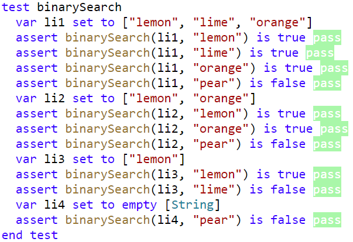
Notes
functions only. It is not possible to call a procedure or main routine within a test. Nor is it possible to use any System method (the same rule as within a function).test methods may be written anywhere in the code, at the global (file) level. assert statements. When tests are run, the test runner (part of the Elan IDE) will attempt to run all assert statements and show the pass/fail outcome alongside each one. However, if the test hits a runtime error (as distinct from an assert failure) then execution of the test will stop and remaining asserts will be shown as ‘not run’.assert statements, a test may contain any other statements that may be added into a function (except return).asserts should be at the top level within the test frame; none should be put into a loop structure.When testing Float values it is recommend that you always use the round function to round the computed result to a fixed number of decimal places. This avoids rounding errors and is easier to read:

If the expression you are testing causes a runtime error then the error will be displayed in the red fail message:

You can also test for the error message successfully, for example:

It is not possible to test for stack overflow exceptions caused, for example, by writing a recursive method with incorrect (or missing) exit conditions. A stack overflow will cause the test runner to ‘time out’ and all tests will be marked ‘not run’:

If this occurs, mark the tests that you added since the last successful test run with ignore (see below), and then remove the ignores one by one until the cause is identified and can be fixed.
It is possible to mark a test with the ignore keyword, by selecting the test frame and then hitting Ctrl-i for example:

When a test is marked with ignore, that test will not be executed when the tests are run, and its result will be shown as ‘not run’. The overall test status will also show in the ‘warning’ status (amber colour), even if all the tests that did run passed. This is to discourage you from leaving a test marked ignore for long.
The principal reason for marking a test ignore is when either the test code or code in any function being called, would not terminate. This typically means that there is a loop (or a recursive call) with no exit condition, or where the exit condition is never met.
If you do create such code without realising it, then when the tests are executed the test runner will ‘time out’ after a few seconds (most tests will pass in milliseconds), and an error message will be shown on the Console. The test that caused the time-out will automatically then be marked ignore. Your priority should then be to identify the cause of the time-out and attempt to fix it before then restoring the test by selecting the test frame and hitting Ctrl-i . (Ctrl-i is a toggle for setting and unsetting an ignore status)
An integer or whole number, i.e. one that has no fractional component.
Int
variable meaningOfLife set to 42
0
If either limit is exceeded the number will automatically be represented as a Float, with possible loss of precision.
Notes
Int may be expressed in decimal or, if preceded by 0x, in hexadecimal. Hexadecimal is useful for defining colours and Unicode codepoint values.Int may always be passed as an argument into a method that specifies a Float.A ‘floating-point number’, i.e. a number that may have both integer and fractional parts.
Floatvariable a set to 1.618Since Elan compiles to JavaScript, the constraints on floating point numbers are those of JavaScript:
For greater detail, refer to the official JavaScript documentation
Notes
A variable that has been defined as being of Type Float may not be passed as an argument into a method that requires an Int, nor as an index into an Array, even if the variable contains no fractional part. However, it may be converted into an Int before passing, using the functions floor() or ceiling():
floor() returns the integer value left by removing any fractional part, and
ceiling() returns the lowest integer greater than the Float value if does have a fractional part.
If you wish to define a variable to be of Type Float but initialise it with an integer value then add .0 on the end of the whole number, for example:
variable a set to 3.0.
A Boolean value is either true or false.
Booleanvariable a set to true
true and false must be written lower-case
falseA String represents ‘text’ i.e. a sequence of zero or more characters.
Stringvariable a set to "Hello"
Strings are always delineated by double-quotes.
"", known as ‘the empty string’.
Notes
Strings may be appended to using the plus operator, for example
print "Hello" + " " + "World"
A newline may be inserted within a string as \n, for example:
print "Hello\nWorld"
' within a string.
Elan strings are automatically interpolated. This means that you may insert the values of variables or simple expressions within a string by enclosing them in curly braces. For example (assuming that the variables a and b are already defined as integers) :
print "{a} times {b} equals {a*b}"
You cannot include the characters ", {, or } directly within a literal string because of their special meanings. Instead, you use the constants quotes, leftBrace and rightBrace respectively:
print "This is double quote mark: " + quotes
Alternatively, you can insert their Unicode codepoints by means of the unicode() standalone function:
print "This is a double quote mark: " + unicode(34)
or
print"Here are the curly braces: {unicode(123)} and {unicode(125)}"Note: There are no ‘substring’ methods in Elan because you can always use an index range get a substring e.g. s[3..7] gives a string containing the fourth through the eighth characters of string s. See Indexed Value.
upperCase() returns String returns a new string based on the input with all alpha-characters in upper-case.
lowerCase() returns String returns a new string based on the input with all alpha-characters in lower-case.
contains(partString as String) returns Booleantakes a single parameter of Type String, and returns a Boolean value indicating whether or not that argument string is contained within the string on which contains was called. Usage:
variable a set to "Hello World!"
print a.contains("ello")
prints true
replace(match as String, replacement as String) returns Stringreturns a new string where all occurrences of the match string are replaced with the replacement string.
trim() returns Stringreturns a new string based on the string on which the method is called, but with all leading and trailing spaces removed.
indexOf(partString as String) returns IntThe following methods are used for comparing strings alphabetically, for example in a sort routine:
isBefore(otherString as String) returns BooleanisAfter(otherString as String) returns BooleanisBeforeOrSameAs(otherString as String) returns BooleanisAfterOrSameAs(otherString as String) returns BooleanasUnicode() returns Intreturns the Unicode (integer) value for a character. If the string is more than one character long, the Unicode value returned is that for the first character in the string only. Note that the opposite method to create a single-character string from its numeric Unicode value is e.g. unicode(123) which returns "{".
| Array | List | |
| Type form | Array<of String>List<of String> |
|
| Literal | ["plum", "pear"] | {"plum", "pear"} |
| Literal empty | empty Array<of String> | empty List<of String> |
| Initial size (filled with default values) | variable a set toIn each case, the last argument is the value to which each element is initialised, and defines the Type of elements in the Array |
Not applicable |
| Read from position | a[3]board[3][4] |
[3] |
| Read range | a[5..9] |
A[5..9)] |
| Put a value | call a.putAt(3, "pear")2D: call board.putAt2D(3,4,"K") |
set a to a.withPutAt(3, "pear") |
| Append and Prepend | call a.append("pear") |
Append: set a to a + {"pear"}
Prepend: set a to {"pear"} + aAppend/prepend a list: set x to listA + listb |
| Insert | call a.insertAt(3, "pear") | set a to a.withInsertAt(3, "pear") |
| Remove by index | call a.removeAt(3) | set a to a.withRemoveAt(3) |
| Remove by value | call a.removeFirst("pear") |
set a to a.withRemoveFirst ("p") |
| Deconstruction into head (first element) and tail (all the rest) | Not applicable | variable x:xs set to myListdiscarding either the head or tail: variable _:tail set to myList |
An ‘Array’ is a simple data structure that holds multiple elements of the same Type.
Unlike a List, an Array is mutable, meaning that the elements within the data structure can be altered without creating a new Array from the old.
The Type is specified in the following form:
Array<of String> for an Array of Type StringArray<of Int> for an Array of Type Intwhere, in these examples, String and Int represent the Type of each element in the Arrays. The element Type can be any Type value – Int, Boolean, Float, String – or the name of a specific class such as Player, or an enum such as Direction. It may also be another data structure, including another Array (sometimes referred to as a ‘nested Array’).
An Array may be defined in ‘literal’ form, ‘delimited’ by square brackets, and with all the required elements separated by commas. The elements may be literal values but must all be of the same Type:
variable fruit set to ["apple", "orange", "pear"]including ‘nested Arrays’:
variable coordinates set to [[3.4, 0.1, 7.8], [1, 0, 1.5], [10, -1.5, 25]]or variables (provided they are all of the same Type): variable values set to [x, y, z]or a mixture of literal values and variables (all of the same Type):variable values set to [3.1, y, z]where y and z are existing variables of Type Float.
You may also define an Array of a specified size, with each element initialised to the same value, for example:
variable fruit set to createArray(20, "")will create an Array of Type String with exactly 20 elements, each initialised to the empty String and:
variable scores set to createArray(12, 100.0)will create an Array of Type Float with exactly 12 elements, each initialised to 100.0.Although the resulting Array may still be expanded subsequently (by using the add procedure), the typical use for these two methods is for cases that would originally have used a traditional (fixed-size) array:
Functions:
myArray.contains(item) returnss true or false
myArray.asList() returnss a List containing the same elements as the Array on which the method was called. This is often used to permit an Array to be passed into a function that has been designed to accept a List.
Procedures:
call fruit.append("banana")
call fruit.appendArray(anotherArray)
call fruit.insertAt(4, "cherry")
call fruit.prepend("melon")
call fruit.putAt(2, "grape")
call fruit.removeAll("apple")
call fruit.removeAt(3)
call fruit.removeFirst("apple")
Elements are read using an index in square brackets – the first element being element [0]. The last element of an Array of size 10 will therefore be accessed by the index [9].
Attempting to read an element by index, where that element does not exist, will result in an ‘Index out of range’ run-time error.
Unlike in many programming languages you may not modify data by index: elements are modified by calling the putAt procedure on the Array.
Try these examples (the last one will produce an error – make sure you understand why):
variable a set to createArray(10, 0)print aprint a.length()call a.putAt(0, 3)call a.putAt(1, 7)print aprint a[0]print a[a.length() -1]print a[a.length()]Unlike in some languages, Elan Arrays may be dynamically extended, using append and prepend methods.
variable a set to createArray(3, 0)variable b set to createArray(3, 10)print aprint ba.append(3)b.prepend(7)print aprint ba.appendArray(b)print aIn Elan, as in many languages, a ‘2-dimensional Array’ is just an Array of Arrays. However, Elan provides a couple of convenient short-cut methods for working with such data structures:
variable board set to createArray2D(8, 8, "")String, and initialised to the empty String. The Type is determined by the Type of the third parameter, which might be an Int, Boolean, or user-defined Type. It need not be an empty value. The Array2D need not be square – it may be rectangular.let a be new Array2D<of Int>()However, this is not recommended as subsequently adding elements takes a lot of care and effort. It is recommended that you always use the method createArray2D to create a 2-dimensional Array initialised to the desired size. That way you can modify individual elements in the initialised Array with e.g.:
call board.putAt2D(3,4,"K")and you can read individual elements with a double index, for example:
for col from 0 to 7 step 1 for row from 0 to 7 step 1 print board[col][row] end forend forIf you want to define a function or procedure with a parameter that should be a 2-dimensional Array, the Type is specified as Array2D, for example:
Array2D<of String>Array2D<of Int>The following methods return an Array of a specified size, and with all elements initialised to a specified value. Although the resulting Array may still be expanded subsequently (by using the add procedure), the typical use for these two methods is for cases that would originally have used a traditional (fixed-size) array:
createArray(size as Int, initialValue as Type) returns [Type]where Type is one of the following Types: Int, Float, Boolean, String or any Type of enum.
There is also a variant of the method that creates a ‘2-dimensional’ rectangular Array (actually an Array of Arrays):
createArray2D(noOfrows as Int, noOfColumns as Int, initialValue as T) returns [[Type]]A List is a simple data structure that holds multiple elements of the same Type.
A list, like a String but unlike an Array, is immutable. You can still insert, delete, or change elements in a List, but the methods for these operations do not modify the input List: they return a new List based on the input List but with the specified differences.
The Type is specified in the following way:
List<of String> for a List of TypeStringList<of Int> for a List of Type >IntA List may be defined in ‘literal’ form, ‘delimited’ by curly braces, and with all the required elements separated by commas. The elements may be literal values but must all be of the same Type):
variable fruit set to {"apple", "orange", "pear"} The dot methods on a list are all functions.
myList.contains(item) returns true or falsemyList.asArray() returns a new Array with the same contents as myListThe following functions all return a new List, copied from the List on which the function was called, but with the differences specified by the function parameters:
myList.withInsertAt(4, "cherry")myList.withPutAt(2, "grape")myList.withRemoveAt(3)myList.withRemoveFirst("apple")myList.withRemoveAll("apple")Try these examples:
variable fruit set to empty List<of String>print fruitset fruit to fruit + "apple"set fruit to fruit + "pear"print fruitset fruit to "orange" + "pear" print fruit[0]print fruit.length()print fruit[fruit.length() -1]variable head:tail set to fruitprint headprint tailThere are two forms of dictionary in Elan: an ordinary Dictionary (which is mutable) and a DictionaryImmutable (which is not).
| Dictionary | DictionaryImmutable | |
| Type form | Dictionary<of String, Int> | DictionaryImmutable<of String, Int> |
| Literal | ["a":1, "b":4] | {"a":1, "b":4} |
| Literal empty | empty Dictionary<of String, Int> | empty DictionaryImmutable<of String, Int> |
| Read the value for a given key | d["a"] | d{"a"} |
| Get all keys Get all values |
and d.values() Both return an immutable list of the appropriate Type |
|
| Define (or change) a value associated with a key | call d.putAtKey("c", 7) | set d to d.withPutAtKey("c", 7) |
| Remove both key and value | call d.removeAtKey("c") | set d to d.withRemoveAtKey("c") |
In the following example, the keys are of Type Int, and the values associated with the keys are of Type String:
Dictionary<of String, Int>For both Dictionary and DictionaryImmutable the values can be of any Type, including a specific Type of class, a List, another Dictionary or some other data structure. However, the key’s Type must be one of: Int, Float, String, Boolean, or a specific Type of enum.
A literal Dictionary is defined as a comma-separated list of ‘key:value pairs’ (key,colon.value) surrounded by square brackets:
variable scrabbleValues set to ["a":1, "b":3, "c":3, "d":2]Try these examples:
variable dict set to new Dictionary<of String, Int>()print dictcall dict.putAtKey("a", 3)print dict["a"]call dict.removeAtKey("a")print dictConstraintsDictionary.See also Quick reference.
putAtKeyremoveAtKeykeysvaluesAn immutable dictionary may be defined in a constant.
In the following example, the keys are of Type Int, and the values associated with the keys are of Type String:
DictionaryImmutable<of String, Int>A literal DictionaryImmutable is defined as a comma-separated list of ‘key:value pairs’ (key,colon.value) surrounded by curly braces:
variable scrabbleValues set to {"a":1, "b":3, "c":3, "d":2}Try these examples:
variable immD set to new DictionaryImmutable<of String,Int>()print immDset immD to immD.withPutAtKey("a", 3)print immD["a"]set immD to immD.withRemoveAtKey("a")print immDSee also Quick reference.
hasKeywithPutAtKeywithRemoveAtKeyA tuple is a way of holding a small number of values of different Types together as a single reference. They are referred to as 2-tuples, 3-tuples, etc. according to the number of values they hold. Common uses include:
Float) as a single unit.String and a Boolean indicating whether the operation was successful.A tuple is considered a ‘lightweight’ alternative to defining a specific class for some purposes.
Written as a comma-separated list of the Type of each member, surrounded by round brackets:
(Int, Int, Int)(String, Boolean)A tuple is defined, where it is needed, by the keyword tuple and a number of elements, each being a variable or a literal value, separated by commas and surrounded by round brackets, for example:
let coords be tuple(x, y)
let myList be {tuple(1,1), tuple(1, 2)}
let foo be tuple(3.769, 4.088, true, 5, "correct")
call proc1(a, coords, tuple(x, y))
return tuple(3, 4)
variable d set to distanceBetween(point1, tuple(12.34, 20.0))tuple (for example point1 below) may be ‘deconstructed’ into new variables or named values (where the number of variables/names must match the number of elements in the tuple): let x, y set to point1variable x, y set to point1
or into existing variables of the correct Type:
variable a set to 3variable b set to 4set a, b to point1_ (underscore) may also be used when deconstructing a tuple when there is no need to capture specific elements:variable x, _ set to point1Notes
tuples are immutable. Once defined they are effectively ‘read only’. You cannot alter any of the elements in a tuple nor (unlike a List for example) can you create a new tuple from an existing one with specified differences.tuple into a mixture of new and existing variables.tuples may be nested: you can define a tuple within a tuple.A function may be passed as an argument into another function (or a procedure), or returned as the result of calling another function. This pattern is known as ‘Higher order Function’ (HoF), and is a key idea in the functional programming paradigm. To define a function that takes in another function as a parameter, or returns a function, you need to specify the Type of the function, just as you would specify the Type of every parameter and the return Type for the function.
The Type of any function starts with the word Func followed by angle brackets defining the Type of each parameter, and the return Type for that function, following this syntax:
Func<of String, String, Int => Boolean>This example defines the Type for a function that defines three parameters of Type String, String, and Int respectively, and returns a Boolean value. T this Type would match that of a function definition that started:
Function charactersMatchAt(a as String, b as String, position as Int) returns BooleanStandalone functions always return a value and are therefore used in contexts that expect a value, such as in the right-hand side of a variable declaration (variable) or assignment (set), either on their own or within a more complex expression. All standalone library functions require at least one argument to be passed in brackets, corresponding to the parameters defined for that function.
unicode(code as Int) returns String
converts a Unicode value (expressed in decimal or hexadecimal notation) into a single character string. For example:
function hearts() return string return unicode(0x2655)end function
parseAsInt(inp as String) returns (Boolean, Int)
parseAsFloat(inp as String) returns (Boolean, Float)
parseAsInt attempts to parse the input String as an Int and returns a 2-tuple, the first value of which is Boolean, with true indicating whether or not the parse has succeeded, and the second value being the resulting Int. parseAsFloat does the equivalent for floating point.
print parseAsInt("31") _ (true, 31)
print parseAsFloat("31") _ (true, 31)
print parseAsInt("31.2) _ (false, 0)
print parseAsFloat("31.2") _ (true, 31.2)
print parseAsInt("0") _ (true, 0)
print parseAsInt("0") _ (true, 0)
Notes
You can ‘deconstruct’ the tuple into two variables:
variable outcome, value set to parseAsInt(myString)
floor(inp as Float) returns Int
returns the nearest integer value below (or equal to) the argument value. Usage:
print floor(2.5) _ 2
ceiling(inp as Float) returns Int
returns the nearest integer value above (or equal to) the input value. Usage:
print ceiling(2.5) _ 3
round(inp as Float, places as Int) returns Float
Rounds the input number of decimal places specified as the second argument (an Int). Usage:
print round(3.14159, 3) _ 3.142
| Function | Argument | Input unit | Returns | Output unit |
pi |
(none) | 3.141592653589793.. | ||
abs |
Float | absolute value of the input | ||
acos |
Float | arccosine of the input | radians | |
asin |
Float | arcsine of the input | radians | |
atan |
Float | arctangent of the input | radians | |
acosDeg |
Float | arccosine of the input | degrees | |
asinDeg |
Float | arcsine of the input | degrees | |
atanDeg |
Float | arctangent of the input | degrees | |
cos |
Float | radians | cosine of the input | |
cosDeg |
Float | degrees | cosine of the input | |
exp |
Float | ex where x is the argument, e being Euler's number 2.718281828459045.. and the base of natural logarithms | ||
logE |
Float | natural logarithm of the input | ||
log10 |
Float | base-10 logarithm of the input | ||
log2 |
Float | base-2 logarithm of the input | ||
sin |
Float | radians | the sine of the input | |
sinDeg |
Float | degrees | sine of the input | |
sqrt |
Float | positive square root of the input | ||
tan |
Float | radians | ||
tanDeg |
Float | degrees | ||
degToRad |
Float | degrees | converts input from degrees to radians | radians |
radToDeg |
Float | radians | converts input from radians to degrees | degrees |
Examples of some maths functions being tested:
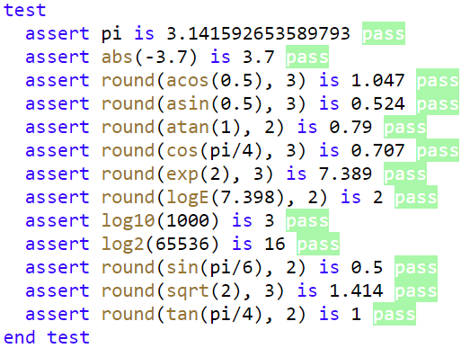
Elan’s regular expressions are modelled on those of JavaScript, including the syntax for literal regular expressions. See, for example this Guide to Regular Expressions.
More functions for using regular expressions will be added in a future release of Elan. For now…
The method testRegExp is applied to a String using dot syntax and requires a RegExp parameter specified as a literal or as variable. It returns a Boolean. For example:
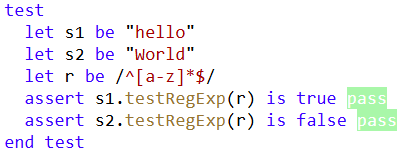
You can convert a valid string without /../ delimiters to a RegExp using function asRegExp:
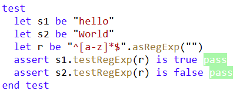
Although it is recommended that literal regular expressions are written with the /../ delimiters, the ability to convert a string allows you to input a regular expression into a running program.
bitAnd(a as Int, b as Int) returns IntbitOr(a as Int, b as Int) returns IntbitXor(a as Int, b as Int) returns IntbitNot(a as Int) returns IntbitShiftL(a as Int, places as Int) returns IntbitShiftR(a as Int, places as Int) returns IntExamples of the bitwise functions being tested:

The result of bitNot(a), where a is 13, being -14 might be a surprise. But this is because the bitwise functions assume that the arguments are represented as 32-bit signed integers. So 13 is represented as 00000000000000000000000000001101, and applying bitNot gives 11111111111111111111111111110010 which is the value -14 in signed two’s complement format, the left-most bit being the sign (0 positive, 1 negative).
All procedures are accessed via a call statement.
pause(100)Typically used to slow down the execution of a program e.g. for a game. The argument provided to pause is in milliseconds, so pause(100) delays execution for one tenth of a second.
clearConsole()See Printing plain text to the Console
clearKeyBuffer()getKey()getKeyWithModifier()waitForAnyKey()System methods appear to work like functions, because:
However, system methods are not pure functions because:
Because of these properties, system methods may be used only within the main routine or within a procedure. System methods may not be used inside a function that you have defined, because to do so would mean that your function would not be pure.
System methods are all defined within the Elan standard library. You cannot write a system method yourself.
System methods are commonly associated with Input/Output, but note that:
clock Returns an integer that increments every millisecond. It is useful for measuring elapsed time by comparing the values returned by two such evaluations of the clock method.
random and randomInt: see Generating random numbers
openFileForReading: see Reading textual data from a file
All the input methods, getKey, and getKeyWithModifier See Inputting data from the keyboard
Stack and Queue are similar data structures except that Stack is ‘LIFO’ (last in, first out), while Queue is FIFO (first in, first out). The names of the methods for adding/removing are different, but there are also common methods, summarised here.Stack and a Queue are defined with the Type of the items that they can contain, similarly to how Array and List have a specified item Type, though with different syntax. The Type is specified in the form shown below e.g. Stack<of String>, Queue<of Int>, Stack<of (Float, Float)>, Queue<of Square>.Stack and Queue are dynamically extensible, like Array and List. There is no need (or means to) specify a size limit as they will continue to expand until, eventually, the computer’s memory limit is reached.Stack into a function, or specify it as the return Type.Stack and Queue have some methods in common: length(), and peek() which allows you to read the next item that would be removed, without actually removing it.Stack and Queue, as summarised in this table:
| Stack | Queue | |
| Create a new instance | let s be new Stack<of Int>() | let q be new Queue<of Int>() |
| Add an item (must be of correct Type) | call s.push(item) |
call q.enqueue(item) |
| Remove the next item | variable item set to s.pop() | variable item set to q.dequeue() |
| View the next item to be removed without removing it | variable item set to s.peek() | variable item set to q.peek() |
| Read the current length | s.length() | q.length() |
Example use of a Stack:
main let sk be new Stack<of String>() print sk.length() call sk.push("apple") call sk.push("pear") print sk.length() print sk.peek() variable fruit set to sk.pop() print fruit set fruit to sk.pop() print fruit print sk.length()end mainExample use of a Queue:
main let qu be new Queue<of String>() print qu.length() call qu.enqueue("apple") call qu.enqueue("pear") print qu.length() print qu.peek() variable fruit set to qu.dequeue() print fruit set fruit to qu.dequeue() print fruit print qu.length()end mainA Set is a standard data structure that works somewhat like a List with the important difference that in a Set a given element may appear only once. If an item being added to a Set is identical to an existing item in the Set then the Set remains the same length as before.
This enables a Set to work like a mathematical set so that it is possible to perform standard set operations such as union or intersection. For the same reason, a Set is an immutable data structure: there are no methods modify the set on which they are called, but several of them (including add, remove) return a new Set that is based on the original Set or Sets, with specified differences.
Example of use:
main variable st set to new Set<of Int>() set st to st.addFromList({3, 5, 7}) print st.length() set st to st.add(7) print st.length() set st to st.remove(3) print st.length() set st to st.remove(3) print st.length() print stend mainNotes
When creating a Set, the Type of the elements must be specified in the form
Set<of String>. This applies both when creating a new, empty set and when defining the Type of a parameter to be a Set.
add, or multiple elements with addFromList and addFromArray.Set from an existing Array or List by calling .asSet() on it.Available dot methods on a Set, and the Type that each returns:
length()
contains(item)
add(item)
addFromList(list)
addFromArray(array)
remove(item)
union(anotherSet)
difference(anotherSet)
intersection(anotherSet)
isDisjointFrom(anotherSet)
isSubsetOf(anotherSet)
isSupersetOf(anotherSet)
asArray(anotherSet)
asList(anotherSet)
asString()
These dot methods are called on any ‘iterable’ Type, which includes Array, List and String. As ‘higher order functions’ they take either a lambda or a function reference as one of their arguments: see Passing a function as a reference.
Important: Several of these methods return an abstract Type named Iterable. The result may easily be turned into a form that can be printed or passed into other functions, by appending .asList() or .asArray() at the end of the expression.
These are not yet fully documented but, for readers familiar with HoFs from another programming language, some examples are shown below.
Usage:
let matches be rules.filter(lambda r as Rule =>
(r.currentState is currentState) and (r.currentSymbol is tape[headPosition]))
Usage:
let next be cellRange.map(lambda n as Int => nextCellValue(cells, n))Usage:
let d2 be possibleAnswers.reduce(d,
lambda dd as Dictionary<of String, Int>, possAnswer as String =>
incrementCount(dd, possAnswer, attempt))
Both these functions may be applied to an Iterable<of Float>, e.g. an Array<of Float> or a List<of Float> and return the maximum or minimum value found therein.
variable a set to {33, 4, 0,99, 82, 55}print "Max: {a.max()} Min: {a.min()}"Alternative implementations of max and min:
variable a set to {33, 4, 0,99, 82, 55}print a.maxBy(lambda x as Int => x mod 10)Returns true or false indicating whether any of the members of the iterable individually pass the test defined by the lambda (which itself returns a Boolean):
variable a set to {33, 4, 0,99, 82, 55}print a.any(lambda x as Int => x > 50)Additional sort methods will be introduced in a later Beta.
For now, sortBy takes a lambda that takes two arguments (of the same Type as that of the iterable being sorted) and compares them, returning an integer with one of the values -1, 0, or +1, to indicate whether the first argument should be placed respectively before, adjacent to or after the second argument in the sorted result, where ‘adjacent to’ means it does not matter whether before or after):
variable source set to {2, 3, 5, 7, 11, 13, 17, 19, 23, 27, 31, 37}print source.sortBy(lambda x as Int, y as Int => if x > y then 1 else -1)The following are not HoFs, but are included here because they are most likely to be used with one of the HoFs listed above.
range(first as Int, last as Int) as Iterable<of Int>returns an iterable containing all the integer values between the two argument values.
.asString().asIterable()
.length()
.head() returns the first item in an Array or a List